Manual de uso
BubaManía · versión 1.2.0 · para caja, meseros y cocina · Descargar PDF
1Entrar e instalar la app
Cada integrante del personal entra con el correo y la contraseña que le dio el encargado. La sesión se queda abierta en ese celular.
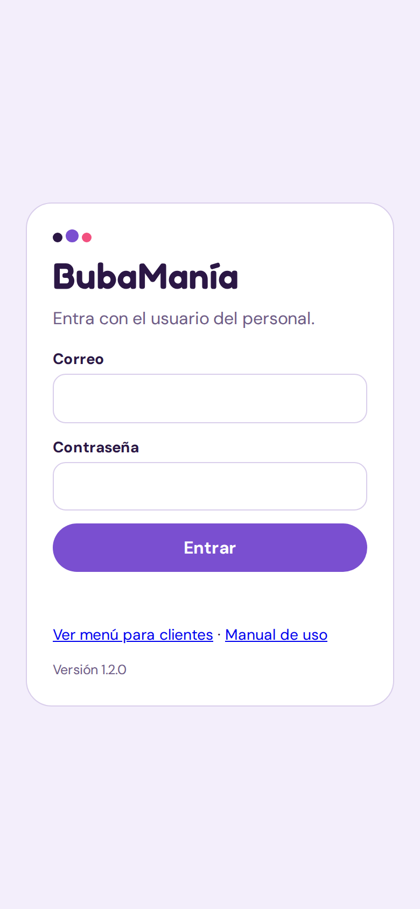
Instalar como app
- iPhone: abre la app en Safari, toca Compartir y elige Agregar a inicio.
- Android: abre la app en Chrome, toca el menú ⋮ y elige Instalar app o Agregar a pantalla principal.
Abajo verás cinco secciones: Pedidos, Cocina, Menú, Caja y Ajustes. Arriba a la derecha, En vivo indica que el celular está sincronizado con los demás.
2Tomar un pedido
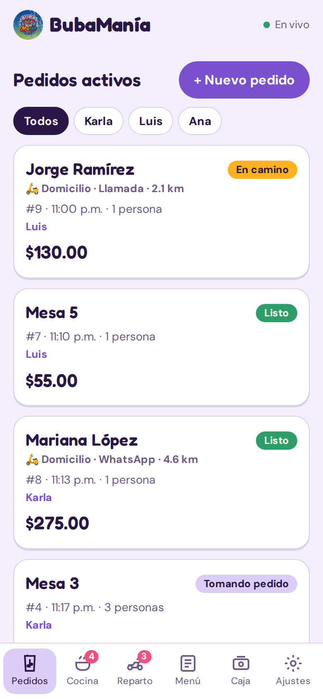
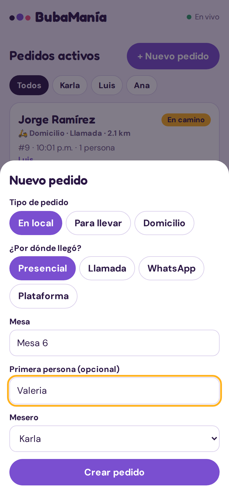
- Toca + Nuevo pedido y elige el tipo (En local, Para llevar o Domicilio) y por dónde llegó (Presencial, Llamada, WhatsApp o Plataforma).
- En local escribe la mesa; para llevar, el nombre del cliente. Los pedidos a domicilio se explican en la sección 13.
- Elige el mesero y toca Crear pedido.
- Para separar cuentas, toca + Persona y escribe su nombre.
- Selecciona a la persona (su botón se pone oscuro) y toca los productos que pidió. Cada toque suma una pieza.
- Usa − y + para ajustar cantidades, y Agregar nota para indicaciones como “sin hielo”.
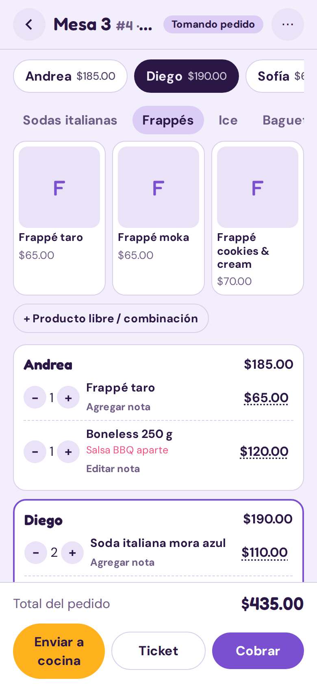
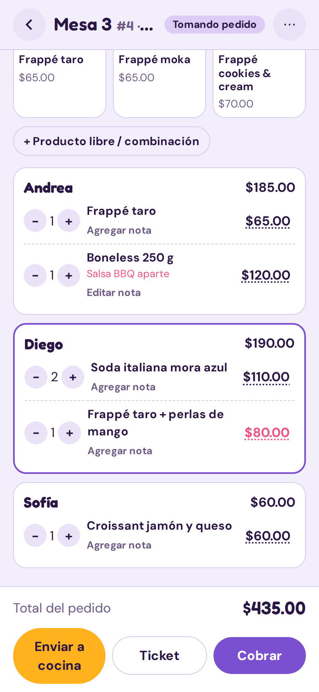
3Cambiar precios y combinaciones
Los precios salen del menú, pero puedes cambiarlos en cualquier pedido sin tocar el menú.
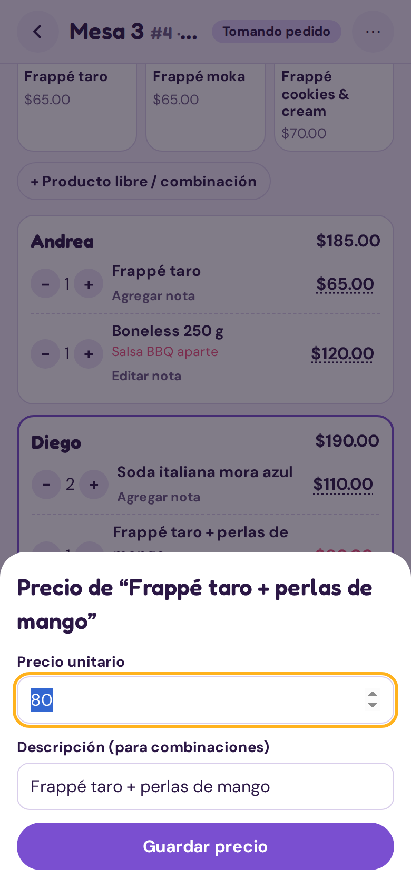
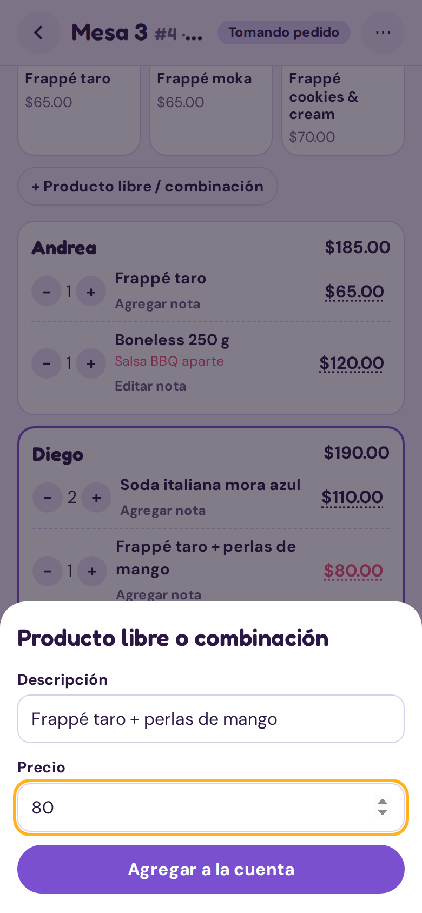
Los precios modificados se ven en rosa para que caja sepa que no son los del menú. Con Usar precio del menú regresas al original.
4Cocina y barra
- Cuando el pedido esté completo, el mesero toca Enviar a cocina.
- En el celular o tableta de cocina, la sección Cocina muestra el pedido al instante, con notas en rosa.
- Al terminar, cocina toca Marcar como listo y el pedido cambia a Listo en todos los celulares.
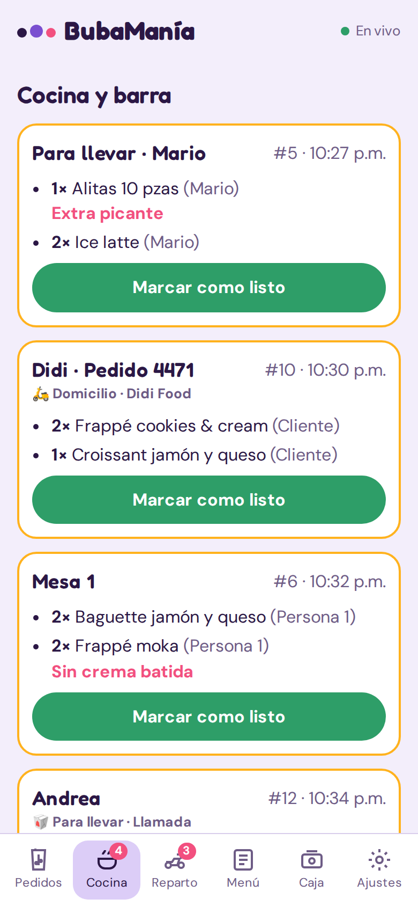
5Cobrar
- Dentro del pedido toca Cobrar.
- Elige quién paga: una persona o Todos juntos.
- Elige la forma de pago: efectivo, tarjeta o transferencia.
- En efectivo, escribe cuánto te dieron y la app calcula el cambio.
- Si dejan propina, escríbela. Se suma al total a cobrar y se asigna al mesero del pedido.
- Toca Registrar pago. La app pregunta si quieres imprimir el ticket.
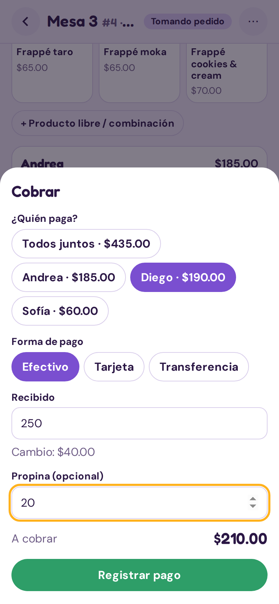
Cuando todas las personas pagaron, el pedido pasa a Pagado y sale de la lista de activos. Lo encuentras en Caja.
6Tickets
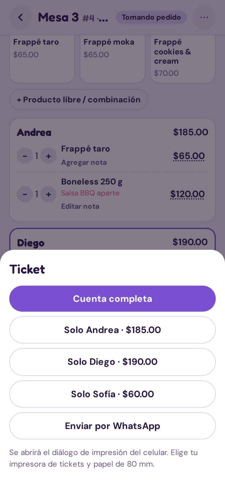
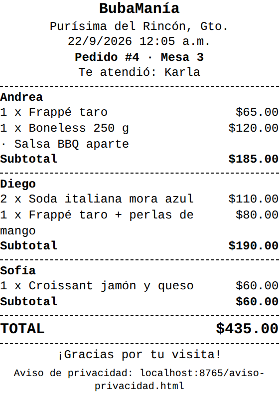
- Se abre el diálogo de impresión del celular. Elige tu impresora de tickets.
- Si el texto sale cortado o muy chico, revisa en Ajustes que el ancho de papel (58 u 80 mm) coincida con tu impresora.
- Usa Imprimir ticket de prueba en Ajustes para probar sin crear un pedido.
7Meseros
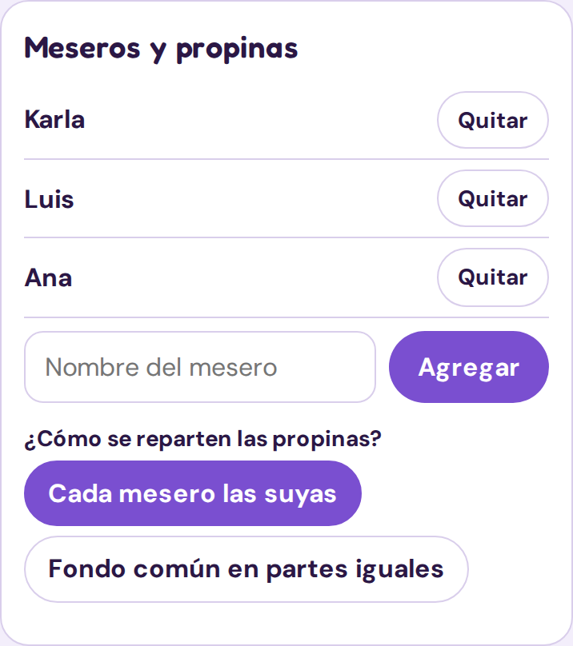
- En Ajustes, escribe el nombre del mesero y toca Agregar.
- Al crear un pedido, elige el mesero. La app recuerda el último filtro usado en ese celular.
- Para cambiar el mesero de un pedido, ábrelo y toca ⋯ arriba a la derecha.
- En Pedidos, los botones con nombres muestran solo los pedidos de ese mesero.
8Propinas
En Ajustes eliges cómo se reparten:
| Modo | Cómo funciona |
|---|---|
| Cada mesero las suyas | Cada propina va al mesero del pedido donde se cobró. |
| Fondo común en partes iguales | Todas las propinas del día se suman y se dividen entre los meseros que marques en Caja. |
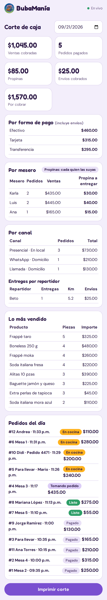
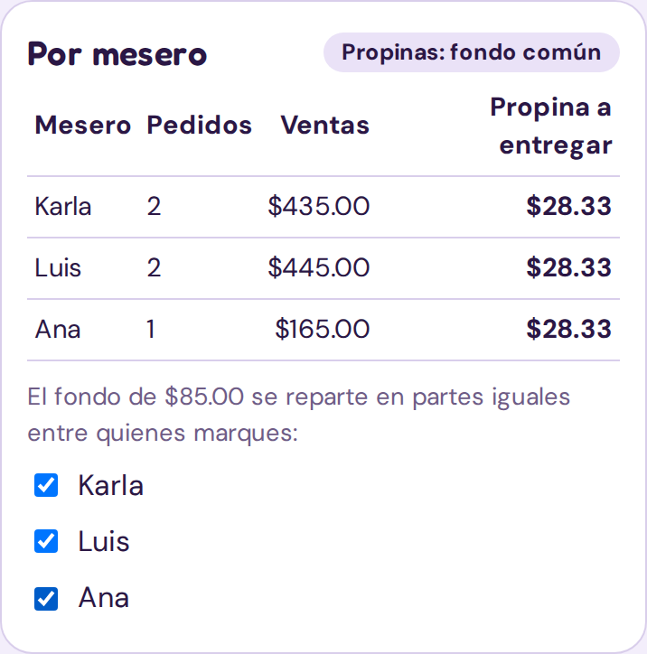
10Código QR para clientes
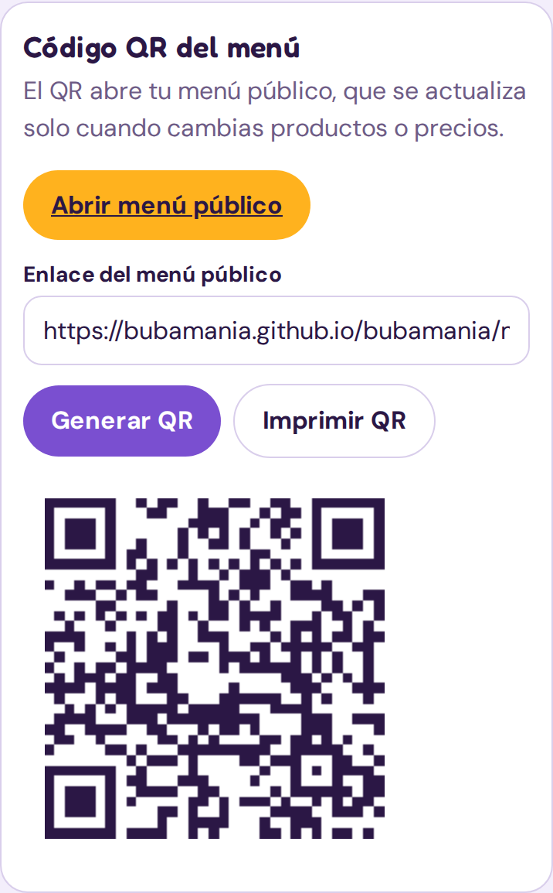
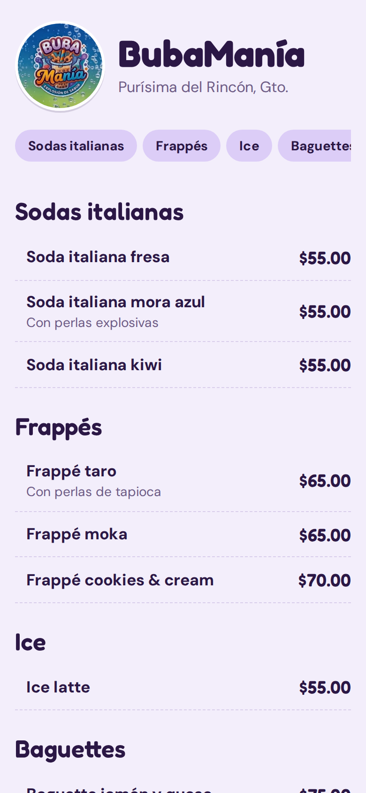
- El enlace del menú ya viene puesto. Toca Generar QR.
- Toca Imprimir QR para una hoja con el nombre del negocio, lista para enmicar y poner en las mesas.
- No necesitas reimprimir el QR cuando cambies el menú.
11Corte de caja
La sección Caja muestra el día actual. Con el calendario de arriba consultas días anteriores.
- Ventas cobradas y Por forma de pago: lo que debe haber en efectivo, terminal y transferencias.
- Por cobrar: pedidos abiertos que aún no pagan.
- Por mesero: ventas y propina a entregar a cada uno.
- Lo más vendido y Pedidos del día. Toca un pedido para abrirlo.
- Imprimir corte saca todo en formato de ticket.
12Mejoras para la app
Cualquier integrante del personal puede anotar errores o ideas en el momento en que surgen. Después se mandan a Claude en una sola lista.
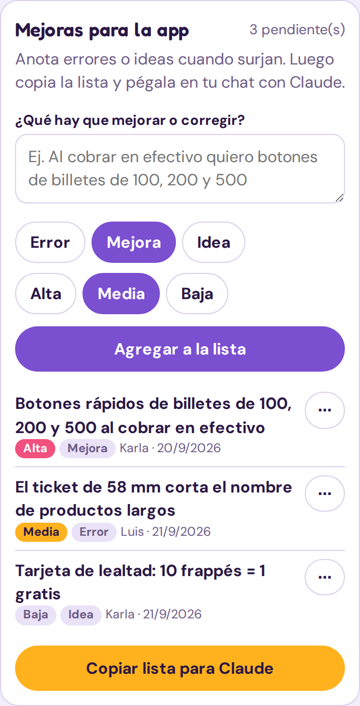
- Describe qué pasa o qué quieres. Sé específico: en qué pantalla, qué esperabas y qué pasó.
- Elige el tipo (Error, Mejora o Idea) y la prioridad, y toca Agregar a la lista.
- Cuando quieras actualizar la app, toca Copiar lista para Claude y pégala en tu chat con Claude.
- La app pregunta si las marcas como enviadas. Cuando Claude entregue la nueva versión, márcalas como hechas con el botón ⋯.
13Pedidos a domicilio
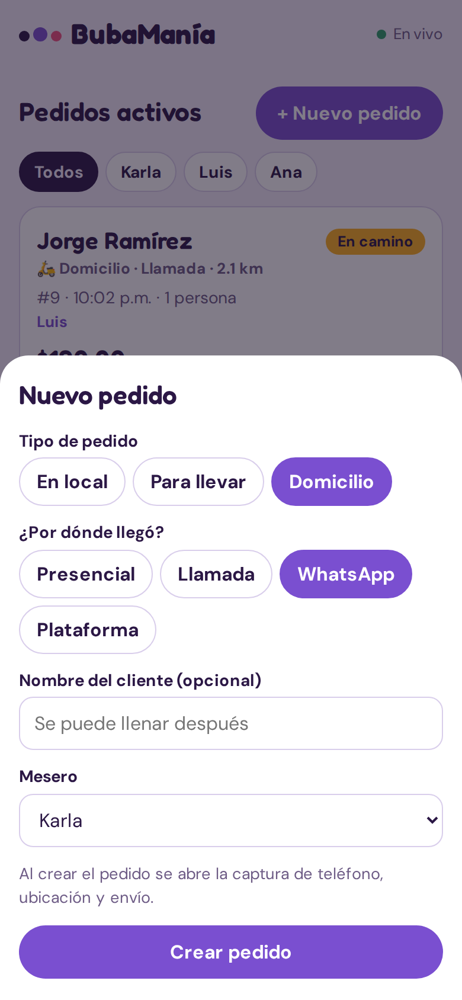
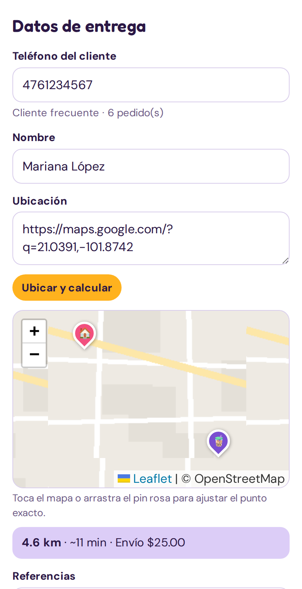
- Crea el pedido con tipo Domicilio y el origen correcto. Se abre sola la ventana Datos de entrega.
- Escribe el teléfono. Si el cliente ya pidió antes, se llenan solos su nombre, dirección y ubicación.
- En Ubicación pega el enlace de ubicación del cliente o escribe la dirección. Para obtener el enlace, abre en Google Maps la ubicación que mandó por WhatsApp y usa Compartir → Copiar; el paso exacto cambia según el celular. También puedes pedirle que te mande el enlace de Google Maps directamente. Toca Ubicar y calcular.
- Revisa el pin rosa 🏠 en el mapa. Si no está en la casa correcta, arrástralo o toca el punto exacto; los km se recalculan.
- El costo de envío se calcula solo con la regla de Ajustes, pero lo puedes cambiar.
- Indica cómo paga: Paga al recibir (y con cuánto, para llevar cambio), Ya pagó o Por plataforma.
- Elige el repartidor y toca Guardar entrega. Después agrega los productos como en cualquier pedido.
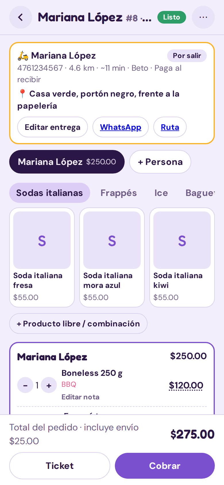
14Pantalla de reparto
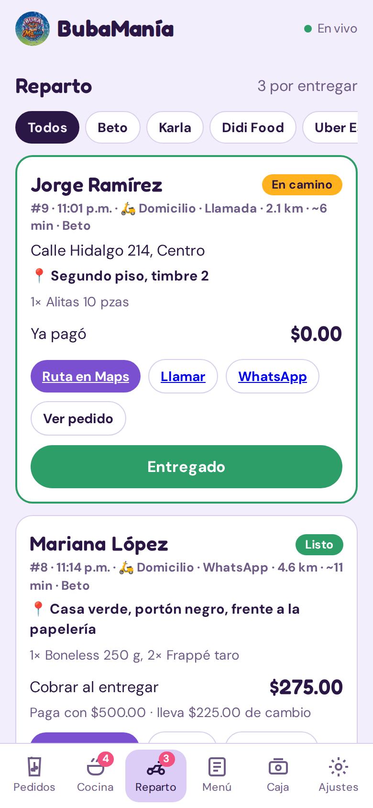
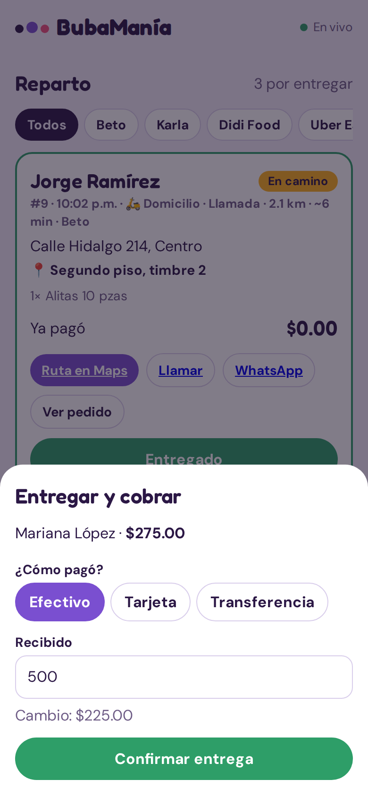
- El repartidor abre Reparto y toca su nombre arriba para ver solo sus entregas. Con Lo llevo yo toma una entrega sin asignar.
- Ruta en Maps abre Google Maps con la navegación; Llamar y WhatsApp contactan al cliente.
- Al salir toca Salí a entregar. La app ofrece avisar al cliente por WhatsApp que va en camino.
- Al llegar toca Entregado, elige cómo pagó y confirma. Si ya estaba pagado, solo se marca como entregado.
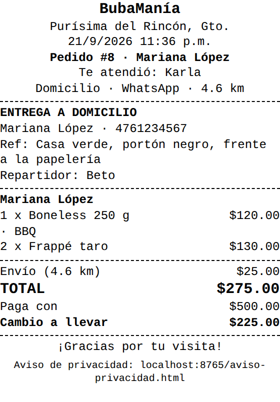
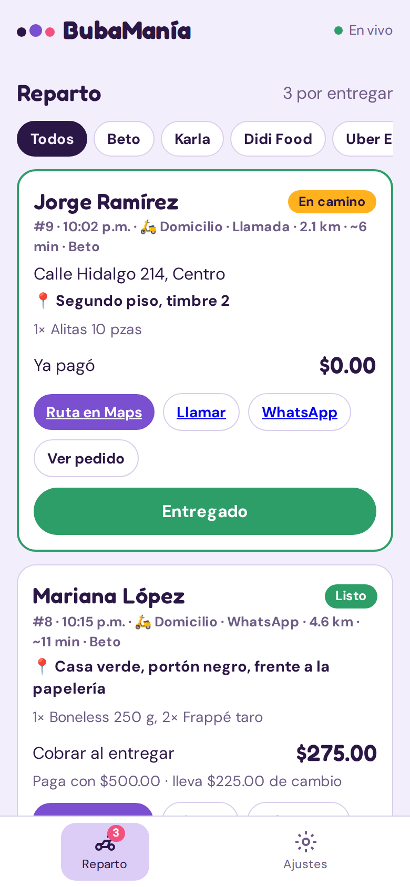
15Configurar el reparto
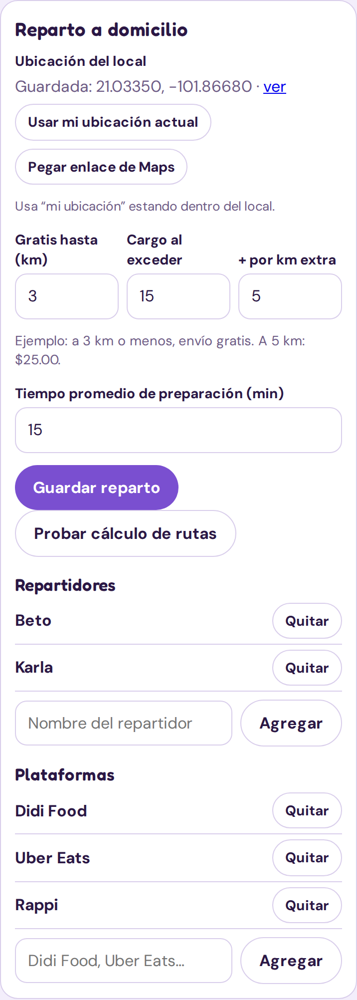
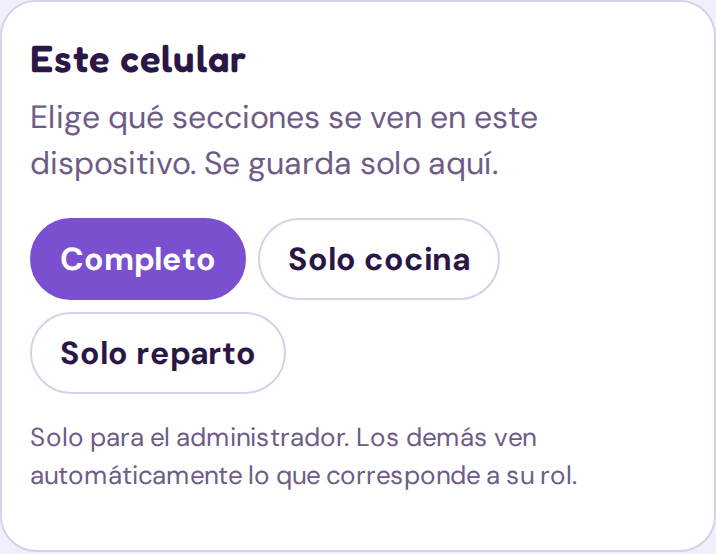
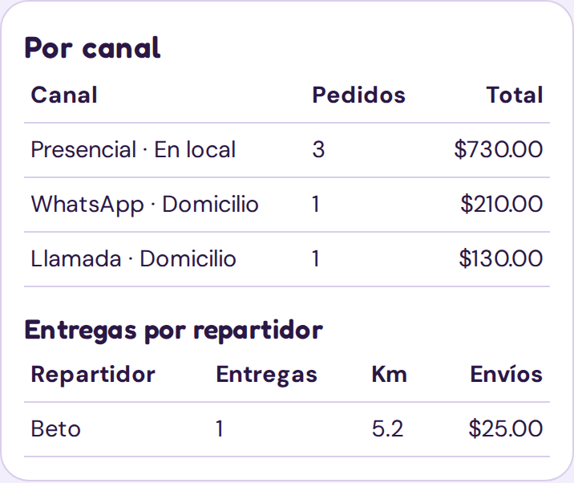
- Ubicación del local: dentro del local toca Usar mi ubicación actual y acepta el permiso. También puedes pegar un enlace de Google Maps del local.
- Envío: define hasta cuántos km es gratis, el cargo al exceder y el cargo por cada km extra. Abajo aparece un ejemplo del cálculo.
- Tiempo de preparación: se suma al tiempo de ruta en el mensaje de confirmación al cliente.
- Agrega repartidores y plataformas, toca Guardar reparto y luego Probar cálculo de rutas.
- En Este celular elige “Solo cocina” para la tableta de cocina o “Solo reparto” para el celular del repartidor.
16Problemas frecuentes
| Qué pasa | Qué hacer |
|---|---|
| Arriba dice “Reconectando…” | Revisa el internet del celular. Al volver la señal, la app se actualiza sola. |
| “Este usuario no está dado de alta como personal” | El encargado debe agregar ese correo a la tabla staff en Supabase (ver README). |
| No aparece la impresora | Revisa que esté encendida y en la misma red Wi-Fi. En iPhone debe ser compatible con AirPrint. |
| El ticket sale cortado | Cambia el ancho de papel en Ajustes (58 u 80 mm). |
| Dos personas editaron el mismo pedido | Se guarda el último cambio. Evita que dos celulares editen la misma mesa al mismo tiempo. |
| No aparece “Mejoras para la app” | Falta ejecutar supabase/migracion-1.1.sql en Supabase. |
| Los km dicen “(aprox.)” o “Probar cálculo de rutas” falla | La función domicilio no está activa o falta la clave ORS_API_KEY (README, paso 4). |
| No se guardan los clientes frecuentes | Falta ejecutar supabase/migracion-1.2.sql. |
| El enlace de WhatsApp no se lee | Marca el punto en el mapa. Pide al cliente “ubicación actual”, no “en tiempo real”. |